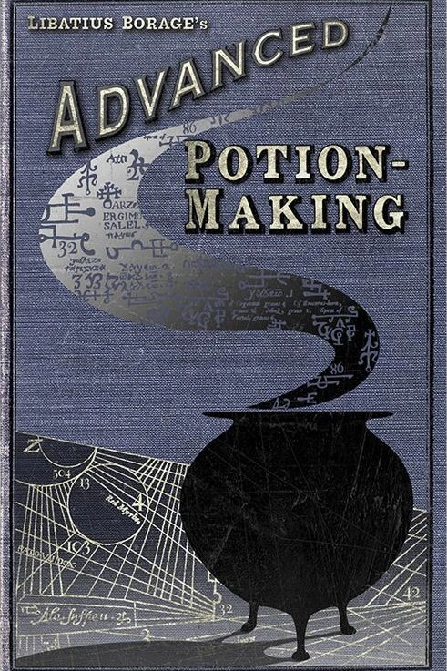
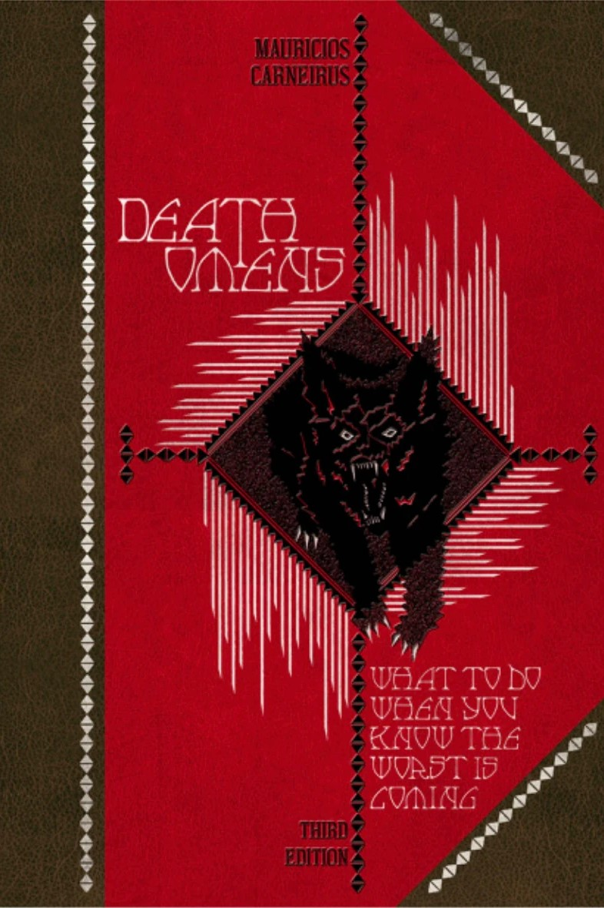
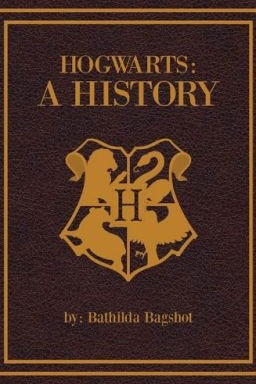
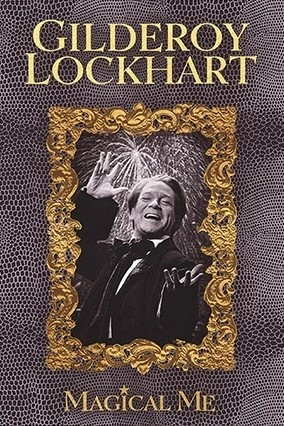
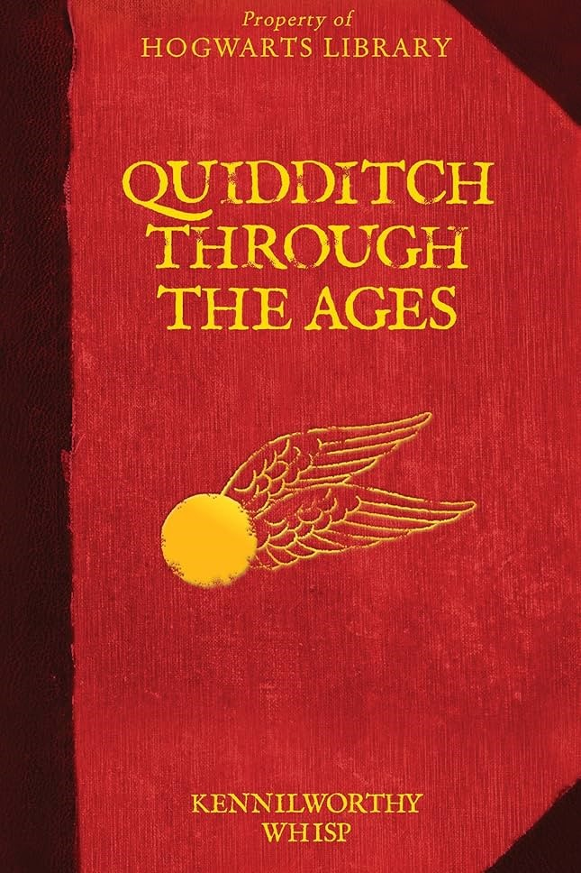

Advanced Potion Making by Libatius Borage
A cornerstone of magical education, Advanced Potion-Making is the definitive N.E.W.T.-level textbook for aspiring potion masters. Penned by the esteemed Libatius Borage and first published before 1947, this classic tome dives deep into the alchemical arts, offering sophisticated recipes, theoretical insights, and meticulous techniques that separate the amateurs from the experts.
9 Galleons, 4 Sickles, 1 Knut
Death Omens by Mauricios Carneirus
Dare to peer into the shadows of fate with this chilling classic of magical Divination. Death Omens is the definitive guide for witches and wizards who've glimpsed the Grim—or any other harbinger of doom—and want to know what comes next. Written by the enigmatic Mauricios Carneirus, possibly a Seer himself, this book explores the signs, symbols, and spectral warnings that precede death, and offers practical advice for those brave enough to confront them.
12 Galleons
Hogwarts, A History by Bathilda Bagshot
Unlock the enchanted past of the world's most famous school of witchcraft and wizardry with Bathilda Bagshot's seminal work, Hogwarts, A History. This richly detailed chronicle explores the founding of Hogwarts by the legendary four—Godric Gryffindor, Helga Hufflepuff, Rowena Ravenclaw, and Salazar Slytherin—and traces the evolution of its magical architecture, traditions, and secrets through the centuries.
6 Galleons, 1 Sickle, 3 Knuts
Magical Me by Gilderoy Lockhart
Prepare to be dazzled by the spellbinding autobiography of the wizarding world's most flamboyant celebrity: Gilderoy Lockhart. In Magical Me, Lockhart recounts his (alleged) heroic exploits against dark creatures and sinister forces, from vanquishing banshees in Borneo to charming trolls in Tuscany—all delivered with his signature flair and a smile that could disarm a dragon.
14 Galleons, 2 Sickles, 6 Knuts
Quidditch Through The Ages by Kennilworthy Whisp
Whether you're wondering how Bludgers came to be, why broomstick regulations matter, or what makes the Quidditch World Cup so legendary, Whisp's meticulous research and infectious enthusiasm make this a must-read for fans and players alike. Even Madam Pince, Hogwarts' notoriously strict librarian, admits the book is “pawed about, dribbled on and generally maltreated nearly every day”—which, according to Albus Dumbledore, is the highest praise a book can receive.
5 Galleons, 1 Knut
Standard Book of Spells Year 1 by Miranda Goshawk

Every great witch or wizard starts somewhere—and this is the book that begins it all. The Standard Book of Spells, Grade 1 is the essential guide for first-year students at Hogwarts, written by the legendary spell theorist Miranda Goshawk. With clear instructions, magical safety tips, and foundational theory, this volume introduces young spellcasters to the charms that shape their magical education.